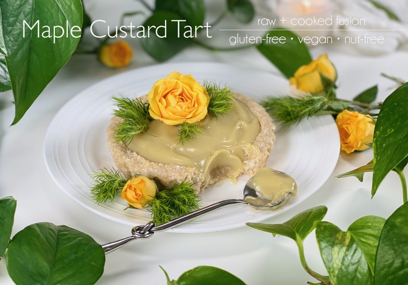
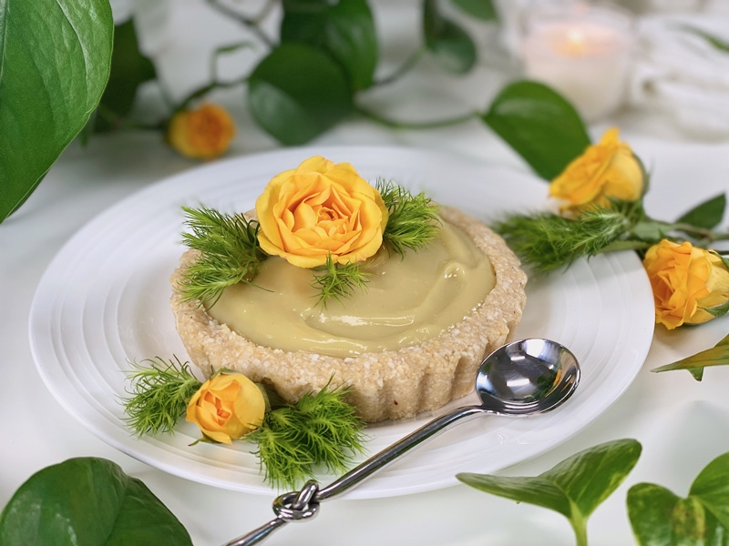
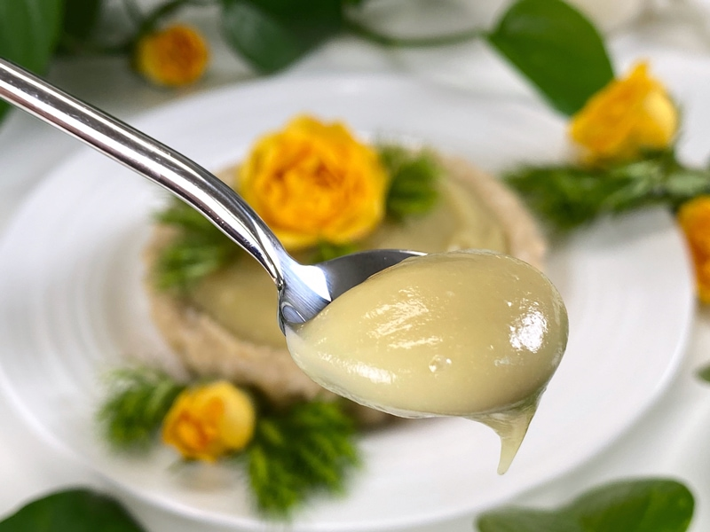

Maple Custard Tarts | Gluten-Free | Vegan | Nut-Free
How do I describe this silky creamy velvety mapley rich custard that has a pillowy texture that literally melts in your mouth? Hmm, I am at a loss for words. I don’t want you thinking that I visited the bible of synonyms — my taste buds were literally tripping over themselves with each spoonful. This dessert is gluten-free, vegan, nut-free (unless you use a nut-based crust), and oil-free, yet nutrient-dense. Trust me, each bite will have you convinced that you are eating a VERY decadent and luxurious dessert but without ANY guilt attached to it.

I am not one to oversell a recipe. I wouldn’t do that to you. I don’t use words to just lure you in, I use words that come to mind as I take in the whole experience. I hope that you feel inspired to give this recipe a try. It’s quick and super easy to make. Ready to dive in? Great, let’s go over a few things before you tie those apron strings.
Typical custard recipes use milk, cheese, or cream cooked with egg or egg yolk to thicken it, and sometimes flour, corn starch, or gelatin. When I read up on the art of making custard, my mind was checking off every single ingredient as one that I DON’T eat. I have to admit, I do love a good challenge; therefore, I set out to create a whole-food, plant-based custard that didn’t lack in flavor, texture, and most importantly… nutrition. We CAN be healthy and enjoy our food, too!

Tips and Techniques
- I am going to let you decide what crust flavor profile you want to make for these tarts. I have 13 different recipes to select from (here). I made the Macadamia Coconut Crust, which paired beautifully.
- Sizing up your dessert — you can create mini (bite-sized) to full-sized (8″) tarts. How many tarts this recipe will yield all depends on what size you want to make.
- Short on time or don’t want the added calories of a crust? Skip the crust and enjoy the custard as a pudding. Another idea would be to create a parfait, layering in fresh berries or granola. My raw Winter’s Blend Granola would taste delicious!
- The custard is nut-free, so if you want to make this a completely nut-free recipe, try my raw Coconut Crust.
- Plant-based milk: I used oat milk, but you can use whatever milk you prefer.

Key Ingredient – Sweet Potato
The type of sweet potato you use is important. IF you can get your hands on Japanese sweet potatoes, please grab them, as they are my preference. Unfortunately, they don’t sell them locally where I live. I just so happened to stumble upon them during a quick trip to Portland. Knowing that this variety may be challenging to find, I also tested the recipe with a standard WHITE sweet potato and it turned out wonderful… whew! I didn’t want this recipe to be that I could make only if I were lucky enough to find Japanese sweet potatoes.
- Steam the sweet potatoes until soft all the way through. I cooked mine in the Instant Pot for 13 minutes, and they turned out perfect.
- Once cool enough to handle, remove the skins. If they are still warm, the skins should come off with your fingers, no knife or peeler needed.
- Blend! Cooked sweet potatoes will blend up nice and creamy, but the key is to blend long enough for all the ingredients to incorporate and until the mixture reaches that velvety texture on your tongue.
- Sweet potatoes are healthy and full of complex carbs. They’re an excellent source of energy, high in dietary fiber, and are rich in vitamins and minerals (notably vitamin C, vitamin A, and vitamin B6).
Sweeteners
- This custard gets its sweetness from three different ingredients: sweet potato, maple syrup, and liquid stevia.
- Sweet potatoes are naturally sweet.
- Maple syrup plays into the maple flavor and the stevia “brightens” the overall sweetness.
- Feel free to play around with the amount of sweetness you add. For instance, decrease the maple syrup to 3 tablespoons and give it a taste test. If it feels like it needs just a nudge more, add the stevia in very small increments, taste testing along the way.
May this recipe bless your body with comfort and nutrition! blessings, amie sue

Ingredients
Crust
Maple Cream Filling – yields 2.5 cups
- 3 cups (475 g) cooked Japanese or white sweet potatoes, skins removed
- 1/4 cup unsweetened plant-based milk
- 1/4 cup maple syrup
- 1 tsp vanilla extract
- 1/2 tsp maple extract
- 1/4 – 1/2 tsp liquid NuNatural Stevia
- 1/4 tsp sea salt
Preparation
Sweet Potato – bake or steam*
- Wash and inspect the sweet potatoes, removing any damaged sections. Do not pierce or cut into the potato.
- Wrap in newspaper, followed by foil, to create a moist, steamed texture. Place on a baking sheet and slide into the oven.
- Bake at 375 degrees (F) for 50-65 minutes – this produces a super sweet, buttery cheesecake-like texture.
- Once the potatoes are done baking and cool enough to handle, gently peel the skins off with your fingers.
- *I steamed the sweet potatoes in an Instant Pot for roughly 13 minutes (size depending), letting it naturally release pressure. Poke with a fork; if it doesn’t glide in easily, cook a bit longer.
Crust
- While the sweet potatoes are cooking, make the crust. See above for recipe ideas and sizing.
Maple Custard
- In the blender, combine the peeled sweet potatoes, plant-based milk, maple syrup, vanilla and maple extract, stevia, and salt. Blend until velvety smooth.
- Pour or spoon the custard into the crust, making sure to add enough to completely fill the cavity.
- See above for more ideas on how to enjoy this custard.
- The custard will last for roughly 5+ days. The crusts last longer, but since the custard is made with a whole food ingredient, you will want to enjoy it sooner than later.
- Store any leftovers in an airtight container in the fridge.
© AmieSue.com